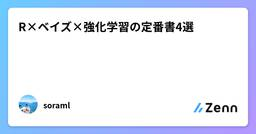
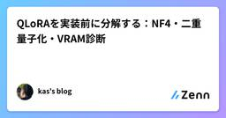
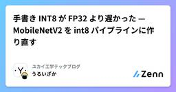
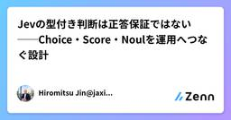
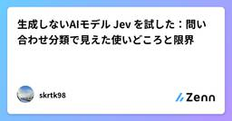
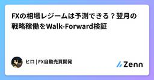
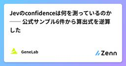
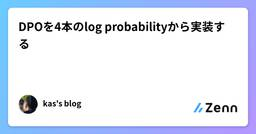
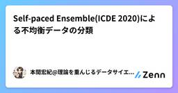

Zennの「機械学習」のフィード
フィード

XGBoostの数学
Zennの「機械学習」のフィード
XGBoostは、なぜ高い精度が出るのでしょうか。「勾配ブースティングに二階微分を取り入れたから」「ニュートン法のように曲率まで見るから収束が速い」そんな説明を見かけます。しかし、数式を追っていくと、話はそれほど単純ではありません。損失関数が二乗誤差なら、XGBoostの「二次近似」は近似ですらありません。正則化を外せば、XGBoostが計算する葉の値はただの残差平均になり、木の分割規準まで古典的なCARTと同じになります。では、XGBoostが使う二階微分は、いったいどこで意味を持つのでしょうか。本書では、XGBoostが「勾配の和」と「二階微分の和」から葉の値を決める式を、平方完成だけで導くところから始めます。そこから分割の利得、学習率、正則化、ロジスティック損失へと進みながら、「二階微分が実際に何を変えているのか」を一つずつ切り分けます。すると、ロジスティック損失では状況が変わります。予測が進むにつれて標本ごとの曲率が変化し、葉ごとの平均曲率も揃わなくなります。本書の実験では、その最大最小比が最大9.74倍まで開きました。ここではじめて、単純な勾配平均では吸収できない「曲率を使う意味」が見えてきます。さらに原論文まで遡ると、もう一つ意外な事実が現れます。XGBoostで使われる「勾配と二階微分から葉の値を決める」という計算そのものは、XGBoostより十数年前のFriedmanの論文ですでに登場していました。では、XGBoostは本当は何を新しくしたのか。そして、「二階微分を使うから収束が速い」という説明は本当に正しいのか。本書ではこれらを一次資料と数式から検証し、最後には決定木の分割、葉の値、ブースティングの反復までNumPyで自作します。既存のXGBoostライブラリを呼び出して結果を見るのではなく、本文で導いた式がそのまま動くところまで確認します。「XGBoostを使える」から、「XGBoostがなぜその計算をしているのか説明できる」へ。二階微分、ニュートン法、正則化、学習率、CARTとの関係まで、XGBoostの仕組みを数式から理解するための本です。
14時間前

R×ベイズ×強化学習の定番書4選
Zennの「機械学習」のフィード
はじめに自分が機械学習の仕事で一番冷や汗をかいたのは、社内レビューで「その特徴量を入れると精度が上がるのは分かった。で、なぜ汎化するの？」と聞かれた時だった。手元のノートブックは動いていたし、交差検証のスコアも出ていた。それでも一言も返せなかった。原因ははっきりしていた。ライブラリのドキュメントとブログ記事を継ぎ足して知識を作っていたからだ。scikit-learn の引数の意味は言えるのに、その裏にある前提を説明できない。この状態はしばらく続いた。そこで一度、腰を据えて教科書を読む時間を取った。目的は最新手法を追うことではない。数年経っても腐らない土台を作ることだ。結果として...
15時間前

QLoRAを実装前に分解する：NF4・二重量子化・VRAM診断
Zennの「機械学習」のフィード
QLoRA（Quantized Low-Rank Adaptation）は、4-bitで保持した凍結base modelをforwardに使い、LoRA adapterだけを学習する構成です。「4-bitでloadできた」ことは、QLoRAが正しく動いた証拠にはなりません。実装では、少なくとも次の四条件を確認する必要があります。狙ったLinear moduleが実際に4-bit表現へ置き換わっている行列積がhardwareに対応したcompute dtypeとkernelで動いているbaseは凍結され、意図したLoRA parameterだけにgradientが流れているsa...
17時間前

Amari–Chentsovテンソルと歪度
Zennの「機械学習」のフィード
情報幾何学を勉強していると、Amari–Chentsovテンソルというものが出てくる（たとえば、文献[1]の式47, 103あたり）。これはcubic tensorとかskewness tensorとかいう呼ばれ方もしており、要は歪度と関係しているらしい記述が出てくるのだが、一方でいわゆる普通の統計の教科書に出てくる歪度と一致しているのかどうか、少なくとも個人的にはすぐにわからなかった。以下では、これらの関係性を具体例での計算で明らかにしてみる。 準備まず歪度について確認する。一般に、確率変数Xのしたがう分布の歪度は、\muを期待値として、\sigmaを標準偏差として、n次キ...
1日前

ショウジョウバエの嗅覚回路を求人の名寄せに使ったら、今のデータでは要らなかった
Zennの「機械学習」のフィード
リゾートバイトの求人を派遣会社6社から集めて横断比較するサイトを作っています。掲載は12,864件です。このサイトには、会社をまたいで「同じような求人」を突き合わせ、時給差を抽出する処理が入っています。そこに FlyHash——ショウジョウバエの嗅覚回路を模した局所性鋭敏型ハッシュ——を使いました。実装は229行、抽出できたのは85,377ペアです。そして本番に載せたあと、今のデータでは FlyHash である必要がなかったことに気づきました。この記事は、なぜ使ったのか、なぜ要らなかったのか、どういう条件なら効いてくるのかの記録です。先に結論です。FlyHash は「似た入力を...
1日前

手書き INT8 が FP32 より遅かった — MobileNetV2 を int8 パイプラインに作り直す
Zennの「機械学習」のフィード
はじめにMobileNetV2 を Raspberry Pi 5（Cortex-A76）上で手書き NEON によって速くしてきた話の続きです。FP32 では 29.5 ms まで詰め、ONNX Runtime（以下 ORT）の FP32 シングルスレッド（33 ms）を上回りました。次は INT8 です。データ量が半分になり、Cortex-A76 には sdot（8bit ドット積命令）もあるので素直に速くなるだろうと思っていたのですが、最初に書いた INT8 カーネルは FP32 の 2〜5 倍遅く、全層 INT8 のバックボーンは 41.9 ms で FP32 の 29....
1日前

YOLO26nアーキテクチャ徹底解析 step4 | Detectブロック
Zennの「機械学習」のフィード
はじめに本記事は、筆者がソースコードおよびモデル構造を独自に解析した情報に基づき解説を行う記事です。本記事の内容は更新される場合があります。内容に大きな変更・追加があった場合は都度Xアカウントにて発信いたします。本記事は「YOLO26nアーキテクチャ徹底解析」シリーズのstep4となります。YOLO26nの全体像を示したstep1の記事はこちらです。Convブロック・PWConvブロック・DWConvブロックについて示したstep2の記事はこちらです。C3k2ブロックやSPPFブロック、その中に利用されているAttentionなどのサブブロックを取り上げたstep3の記事はこちら...
1日前

文章を生成しないAI「Jev」を日本語で48回試した。速さより面白かったのは「迷い」
Zennの「機械学習」のフィード
「この問い合わせは返金要求ですか？ はい・いいえだけで答えてください。説明は不要です。」LLMをアプリに組み込んだことがある人なら、一度はこんなプロンプトを書いたのではないでしょうか。欲しいのは文章ではなく、条件分岐に使う値。それなら、最初から文章を生成しないモデルを使ったらどうなるのか。TypeSafe AIの Jev を、OpenRouter経由で実際に呼び出してみました。自作した日本語の問い合わせ16文を、それぞれ3回。毎回、担当部署・返金要求・緊急度の3問をまとめて渡しています。結果は、48回の呼び出しで中央値286ms、合計約0.00146ドル。ただし、全部が想定どおり...
1日前

Jevの型付き判断は正答保証ではない──Choice・Score・Noulを運用へつなぐ設計
Zennの「機械学習」のフィード
TypeSafe AIが2026年9月に発表したJevは、文章生成ではなく、コードが直接扱える型付きの判断を返す「System One model」として紹介されている。入力のstateに対して質問を定義し、選択肢やスコア、確率を得る。早期アクセス段階の製品であり、本稿は公式資料を読んだ設計検討である。JAXIAでの導入・実測を報告するものではない。 3種類の問いを使い分ける公式ドキュメントのプリミティブは次の3つだ。Choice：定義済みの候補から一つを選ぶ。選択結果、各候補のprobabilities、confidenceを返す。候補が網羅できない場合はotherやnon...
1日前

LightGBM Rankerを深掘りする：LambdaRankの仕組みと予測の中身
Zennの「機械学習」のフィード
はじめにこんにちは、はたはたです。今回は、検索やレコメンドで使われるランキングモデルについて、普段より少し細かく追ってみます。検索、レコメンド、広告配信では、候補を1つずつ独立に評価するだけでなく、候補集合の中で「どれを上に並べるか」を直接扱いたいことがあります。このような問題に使われるのがランキング学習です。本記事では、LightGBMのLGBMRankerでlambdarankを使い、ランキングモデルの学習で何が起きているのかを深掘りします。合成したtoyデータを使って、qidによるグループ化、LambdaRankのobjective、決定木の構造、特徴量変換の影響、gai...
2日前
線形代数シリーズ2：ベクトル空間と行列の四つの基本部分空間
Zennの「機械学習」のフィード
本記事は線形代数シリーズの第2回です。今回は「ベクトル空間」を主題とし、行列に付随する四つの基本部分空間（列空間・零空間・行空間・左零空間）、その次元関係を示す二つの基本定理、直交性、射影、最小二乗近似、そしてグラム・シュミット法とQR分解までを一連の流れとして扱います。データサイエンスや機械学習の手法（最小二乗法、PCA、正規方程式など）の背後にある考え方を理解する土台になることを意図しています。 ベクトル空間とはベクトル空間とは、ベクトルの足し算とスカラー倍という二つの演算が定義され、それらの演算について閉じている集合のことです。厳密には、集合 V が体 \mathbb{R} ...
2日前
線形代数シリーズ1：消去を行列で表す、逆行列、LU分解の基礎
Zennの「機械学習」のフィード
線形代数を基礎から整理し直すシリーズの第1回です。今回は、連立方程式の消去操作を行列の積として表現するところから出発し、置換行列、逆行列の性質、ガウス・ジョルダン消去法、そしてLU・LDU分解までを扱います。データサイエンスや機械学習の手法を理解する際の土台として、一度きちんと整理しておきたい内容です。全体を通して、同じ1つの行列A = \begin{pmatrix} 2 & 1 & 1 \\ 4 & 3 & 3 \\ 8 & 7 & 9 \end{pmatrix}を例に使い、消去・分解・逆行列の計算がすべて同じ操作の言い換えであ...
2日前

Jevの確率を事前分布にする——離散事象を自社データで更新する
Zennの「機械学習」のフィード
この記事で考えること株式会社DeploAIで代表取締役CTOをしている袖山剛です。営業を科学するプロダクトの開発と、お客様の業務にAIを組み込む仕事をしています。その中で使う統計を理解するために、ベイズ統計を学び直しています。!この記事は、Jevの確率を事前分布へ組み込み、自社データでの学習を早められないかという未検証の仮説です。Jevを使ったNext Actionの実験も、自社の実商談データによる比較評価もまだ行っていません。以下のJev出力と確定件数はすべて説明用の仮の値です。TypeSafe AIのJevは、あらかじめ定義した選択肢について確率分布を返します。例えば...
2日前
LoRAをW₀x+sBAxから実装する：rank・初期化・mergeの勘所
Zennの「機械学習」のフィード
LoRA（Low-Rank Adaptation、低ランク適応）は、事前学習済みの重みを固定し、更新差分だけを低ランク行列で学習するPEFT（Parameter-Efficient Fine-Tuning、少数パラメータだけを更新する追加学習）手法です。式は短いですが、実装では次の点を混同しやすくなります。低ランク化するのはbase weightではなく更新差分rankはadapterの容量だけでなくparameter数とscaleにも関係するzero初期化では最初からAとBが同じように学習されるわけではないLoRAが減らすのは主にgradientとoptimizer sta...
2日前

生成しないAIモデル Jev を試した：問い合わせ分類で見えた使いどころと限界
Zennの「機械学習」のフィード
問い合わせの一次振り分けに生成型 LLM を使うと、返答文まで扱える反面、後段のプログラムで使うには出力を整形する処理が必要になることがある。TypeSafe AI の Jev は、その逆を狙ったモデルだ。文章を生成せず、あらかじめ定義した選択肢、段階評価、真偽の確率だけを返す。jev-1.13.0 を、問い合わせ文、否定表現、皮肉、多言語を含む 21 件の入力で試した。結論から書くと、候補を事前に決められる定性的な判断には扱いやすかった。一方で、計算、日付比較、自由記述の説明を任せるものではない。 TypeSafe AI と System One モデルTypeSafe...
2日前

FXの相場レジームは予測できる？翌月の戦略稼働をWalk-Forward検証
Zennの「機械学習」のフィード
トレンド戦略は、相場が素直に動くときほど機能しやすく、レンジや転換期では苦戦しやすくなります。それなら、現在の相場状態から翌月もトレンド戦略を動かすべきか予測できないでしょうか。今回はUSDJPYの15分足から、ATR、ADX、値動きの効率、移動平均線の傾き、トレンド・レンジの出現率などを月単位で集計しました。その時点までの情報だけを使い、翌月の戦略成績が悪化するかをWalk-Forwardで検証します。先に結論を書くと、市場情報だけでは予測できませんでした。過去の戦略成績も加えると改善しましたが、事前に決めた実用条件をすべて満たせず、不採用です。この記事はバックテストを使った研...
2日前

GPU数万枚の強化学習に、デスクトップ1台と数ドルのコード進化で迫る — 自律最適化エンジン「TANREN」の設計
Zennの「機械学習」のフィード
TL;DR数万GPUでの強化学習や、推論時に大量トークンを消費し続けるアプローチに対抗し、デスクトップ1台・数ドルのAPI代でアルゴリズムを自律最適化する仕組み「TANREN（鍛錬）」を作りました。重み（Weight）を訓練するのではなく、凍結LLMに候補コードを書かせ、決定論的検証器で評価して「読める数十行のPythonコード」を進化させます（DeepMind FunSearchの軽量化）。探索停滞（プラトー）を破るため、失敗トレースから「処方箋ではなく客観的事実のみ」を返す自己診断ループを導入。Atari Pongの理論上限（21-0）や、実機vLLMスケジューラのテール...
2日前

Jevのconfidenceは何を測っているのか ── 公式サンプル6件から算出式を逆算した
Zennの「機械学習」のフィード
TL;DR2026年9月15日にTypeSafe AIが公開した Jev は、文字列を生成せず「型付きの判断＋確率＋confidence」だけを返すモデル。LLMの代わりに、コード内の分類・振り分けを担うconfidence の算出式は非公開。公式ドキュメントのChoice回答例6件で逆算すると、5件は (K·p_max − 1)/(K − 1) に丸め誤差内で一致した。ただしQuick startの1件だけは正規化エントロピーの式に一致 し、ドキュメント内で定義が揺れているように見えるさらに、Quick startに載っているScoreの回答例は、公式 typesafe-s...
3日前

DPOを4本のlog probabilityから実装する
Zennの「機械学習」のフィード
DPO（Direct Preference Optimization、直接選好最適化）は、同じpromptに対するchosen responseとrejected responseを使い、言語モデルを直接更新する手法です。「報酬モデルもPPOも不要」という説明は正しい一方、それだけでは実装時に迷います。DPO lossへ入るのは、policyとreference modelがchosen/rejectedへ与える4本のsequence log probabilityです。token単位のcross entropyをそのまま入れるわけではありません。この記事では、KL制約付き目的関数か...
3日前

Self-paced Ensemble(ICDE 2020)による不均衡データの分類 1
1
Zennの「機械学習」のフィード
手元のデータで少数派がごくわずかしかないとき、多数派のどれを捨てて学習させるかを、何を基準に決めているでしょうか。この問いに一つの答えを出しているのが、自己ペース型アンサンブル(Self-paced Ensemble)という手法です。不均衡データの分類では、多数派(正常な取引、離脱しなかったユーザー)が少数派(不正、離脱)よりはるかに多く、そのまま学習させると、分類器は多数派ばかりを言い当てるようになります。よく使われる対策が、多数派をランダムに間引いて少数派と釣り合う数まで減らすことです。ただ、ランダムに間引くと、境界のすぐそばにいて判断の分かれるサンプルも、誰が見ても多数派だと分か...
3日前